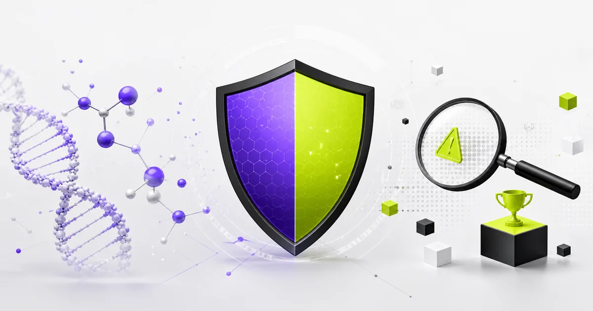

OpenAI、生物安全性の懸賞制度を継続化──報酬最大5万ドル

- OpenAIが、生物リスク対策のBio Bug Bountyを継続型のOpenAI Bio Bounty Programへ移行した
- 対象はGPT-5.6以降のフロンティアモデルで、GPT-5.5の既存テストは2026年7月27日まで続く
- 普遍的な脱獄を見つけた場合の最大報酬は、2万5000ドルから5万ドルへ引き上げられた
何が発表されたか
OpenAIは2026年7月9日、生物分野の危険な使い方を防ぐためのOpenAI Bio Bounty Programを発表しました。これは、これまでのGPT-5.5 Bio Bug Bountyを、1回限りではなく継続して動く非公開プログラムへ変えるものです。
対象になるのは、OpenAIが決めた生物安全性の課題を突破できる「普遍的な脱獄」です。簡単に言うと、どのような聞き方でもAIの安全対策をすり抜けて危険な回答を出せてしまう弱点を、外部の専門家に探してもらう仕組みです。
詳細
公式発表では、プログラムはGPT-5.6から先のフロンティアモデルを対象にして続くと説明されています。GPT-5.5向けに始まっていた既存のBio Bountyの範囲も、2026年7月27日までは維持されます。その日以降は、対象がGPT-5.6だけになる予定です。
報酬も引き上げられました。普遍的な脱獄を見つけた場合の報酬は、GPT-5.6とGPT-5.5の両方で2万5000ドルから5万ドルに上がりました。部分的な成果にも、OpenAIの判断で小さめの報酬が出る場合があります。
参加には短い申請が必要です。OpenAIによると、受け入れられた参加者は既存のChatGPTアカウントを持っている必要があり、NDAに署名したうえで、Bio Bounty用のプラットフォームに案内されます。過去にGPT-5.5 Bio Bountyへ応募した人は、再応募しなくてよいとされています。
なぜ重要か
今回の発表は、新しいAIモデルの性能だけでなく、危険な使われ方を見つける仕組みも強める動きです。特に生物分野は、誤った使い方をされると現実の安全に関わるため、社内テストだけでなく、外部のAIレッドチーム、セキュリティ、生物安全保障の専門家を入れる意味があります。
会社でAIを使う側にとっては、「どのモデルが高性能か」だけでなく、「危険な分野に対してどのような検査体制を持っているか」も選定材料になります。医療、創薬、研究支援、教育などで生成AIを使う企業は、モデル提供元の安全対策や報告制度を、契約前の確認項目に入れるべきです。
※ 本記事は公開時点の一次情報にもとづいています。最新の状況は出典をご確認ください。
← AI深報トップへ